Add an Environment
Environment is an important part of a Scene in AWSIM.
Every aspect of the simulated surrounding world needs to be included in the Environment prefab - in this section you will learn how to develop it.
However, first Lanelet2 needs to be developed along with 3D models of the world, which will be the main elements of this prefab.
Tip
If you want to learn more about the Environment at AWSIM, please visit this page.
Create a Lanelet2
Before you start creating Lanelet2, we encourage you to read the documentation to find out what Lanelet2 is all about.
Lanelet2 can be created using VectorMapBuilder (VMP) based on the PCD obtained from real-life LiDAR sensor.
For details please visit the official user guide.
When working with the VMP, it is necessary to ensure the most accurate mapping of the road situation using the available elements.
Especially important are TrafficLanes created in VMB as connected Road Nodes and StopLines created in VMB as Road Surface Stoplines.
Lanelet2 positioning
Lanelet2 should be created in MGRS coordinates of the real place you are recreating. Please position your Lanelet2 relative to the origin (bottom left corner) of the MGRS Grid Zone with the 100 km Square ID in which the location lays. More details can be read here.
You can think of the Grid Zone as a local coordinate system. Instead of making global (0,0) point (crossing of Equator and Prime Median) our coordinate system origin we take a closer one. The MGRS Grid Zone with 100 km Square ID code designates a 100x100 [kmxkm] square on the map and we take its bottom left corner as our local origin.
Example
Lets examine one node from an example Lanelet2 map:
<node id="4" lat="35.68855194431519" lon="139.69142711058254">
<tag k="mgrs_code" v="54SUE815501"/>
<tag k="local_x" v="81596.1357"/>
<tag k="local_y" v="50194.0803"/>
<tag k="ele" v="34.137"/>
</node>
The node with id="4" position is described as absolute coordinates given in the <node>.
In this example the coordinates are as follows lat="35.68855194431519" lon="139.69142711058254.
It is also described as local transformation defined as a translation relative to the origin of the MGRS Grid Zone with 100 km Square ID (bottom left corner).
The MGRS Grid Zone designation with 100 km Square ID in this case is equal to 54SUE.
In this example the offset in the X axis is as follows k="local_x" v="81596.1357"
and the offset in the Y axis is as follows k="local_y" v="50194.0803".
Note that elevation information is also included.
Create 3D models
You can create 3D models of an Environment as you wish.
It is advised however, to prepare the models in form of .fbx files.
Additionally you should include materials and textures in separate directories.
Many models are delivered in this format.
This file format allows you to import models into Unity with materials and replace materials while importing. You can learn more about it here.
You can see a .fbx model added and modified on the fly in the example of this section.
Guidelines
To improve the simulation performance of a scene containing your Environment prefab, please keep in mind some of these tips when creating 3D models:
-
Prefer more smaller models over a few big ones.
In general it is beneficial for performance when you make one small mesh of a object like tree and reuse it on the scene placing many prefabs instead of making one giant mesh containing all trees on the given scene. It is beneficial even in situations when you are not reusing the meshes. Lets say you have a city with many buildings - and every one of those buildings is different - it is still advised to model those building individually and make them separate GameObjects.
-
Choose texture resolution appropriately.
Always have in mind what is the target usage of your texture. Avoid making a high resolution texture for a small object or the one that will always be far away from the camera. This way you can save some computing power by not calculating the details that will not be seen because of the screen resolution.
Practical advice
You can follow these simple rules when deciding on texture quality (texel density):
- For general objects choose 512px/m (so the minimum size of texture is 512/512)
- For important objects that are close to the camera choose 1024px/m (so the minimum size of texture is 1024/1024)
-
(optional) Add animation.
Add animations to correct objects. If some element in the 3D model are interactive they should be divided into separate parts.
What's more, consider these tips related directly to the use of 3D models in AWSIM:
- Creating a 3D model based on actual point cloud data makes it more realistic.
- AWSIM is created using HDRP (High Definition Rendering Pipeline) which performs better when object meshes are merged.
- Occlusion culling and flutter culling cannot be used because the sensors detection target will disappear.
- Each traffic light should have a separate
GameObject. Also, each light in the traffic light should be split into separate materials.
Create an Environment prefab
In this part, you will learn how to create a Environment prefab - that is, develop a GameObject containing all the necessary elements and save it as a prefab.
1. Add 3D models
In this section we will add roads, buildings, greenery, signs, road markings etc. to our scene.
Most often your models will be saved in the .fbx format.
If so, you can customize the materials in the imported model just before importing it.
Sometimes it is necessary as models come with placeholder materials.
You can either
- replace materials for every added GameObject into the Scene,
- or replace materials for one GameObject and save this object as a prefab to easily load it later.
In order to add 3D models from the .fbx file to the Scene please do the following steps:
- In the Project view navigate to the directory where the model is located and click on the model file.
- Now you can customize the materials used in the model in the Inspector view.
- Drag the model into the Scene where you want to position it.
- Move the Object in the Hierarchy tree appropriately.
- (optional) Now you can save this model configuration as a prefab to easily reuse it. Do this by dragging the Object from the Scene into the Project view. When you get a warning make sure to select you want to create an original new prefab.
Example
An example video of the full process of importing a model, changing the materials, saving new model as a prefab and importing the new prefab.
When creating a complex Environment with many elements you should group them appropriately in the Hierarchy view. This depends on the individual style you like more, but it is a good practice to add all repeating elements into one common Object. E.g. all identical traffic lights grouped in TrafficLights Object. The same can be done with trees, buildings, signs etc. You can group Objects as you like.
Object hierarchy
When adding elements to the Environment that are part of the static world (like 3D models of buildings, traffic lights etc.) it is good practice to collect them in one parent GameObject called Map or something similar.
By doing this you can set a transformation of the parent GameObject Map to adjust the world pose in reference to e.g. loaded objects from Lanelet2.
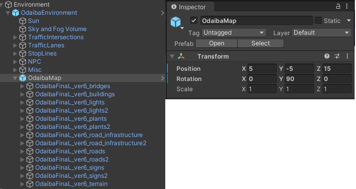
Remember to unpack
Please remember to unpack all Object added into the scene.
If you don't they will change materials together with the .fbx model file as demonstrated in the example below.
This is unwanted behavior. When you import a model and change some materials, but leave the rest default and don't unpack the model, then your instances of this model on the scene may change when you change the original fbx model settings.
See the example below to visualize what is the problem.
Example
In this example we will
- Place the model on the Scene.
- Then intentionally not unpack the model
- Only then change the materials of the original fbx model, not the instance on the scene
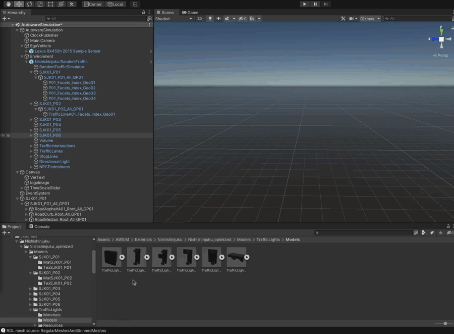
Watch what happens, the instance on the Scene changes the materials together with the model. This only happens if you don't unpack the model.
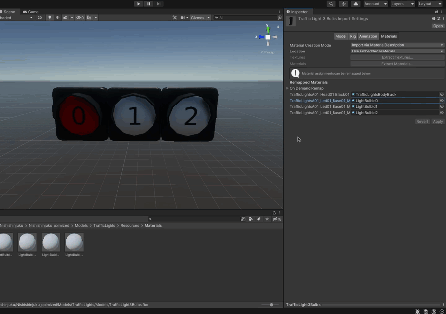
Example Environment after adding 3D models
After completing this step you should have an Environment Object that looks similar to the one presented below.
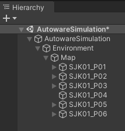
The Environment with 3D models can look similar to the one presented below.
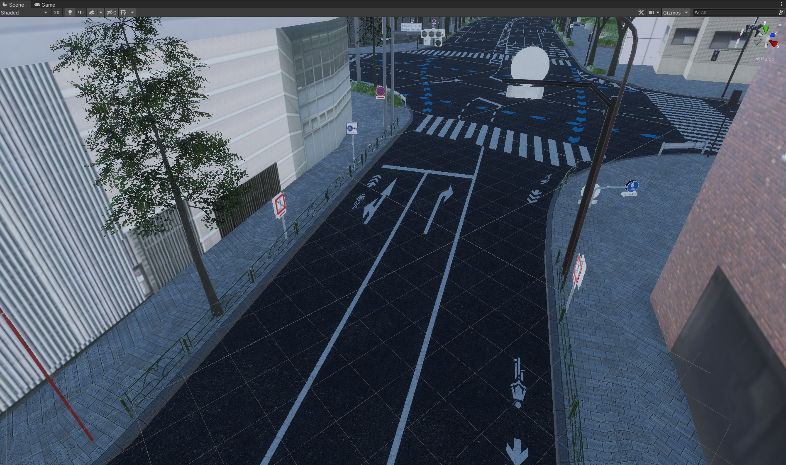
2. Add an Environment Script
Add an Environment Script as component in the Environment object (see the last example in section before).
It does not change the appearance of the Environment, but is necessary for the simulation to work correctly.
-
Click on the Add Component button in the
Environmentobject.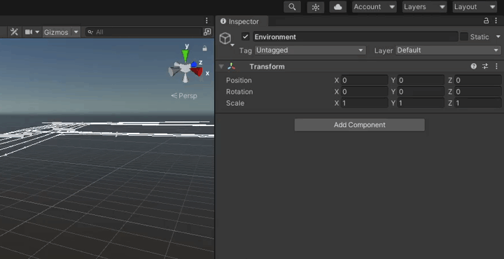
-
Search for
Environmentand select it.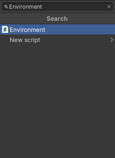
-
Set the
MGRSto the offset of your Environment as explained in this section.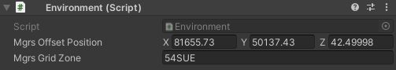
Info
Due to the differences between VectorMapBuilder and Unity, it may be necessary to set the transform of the Environment object.
The transform in Environment should be set in such a way that the TrafficLanes match the modeled roads. Most often it is necessary to set the positive 90 degree rotation over Y axis.
This step should be done after importing items from lanelet2. Only then will you know if you have Environment misaligned with items from lanelet2.
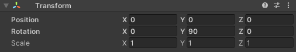
3. Add a Directional Light
-
Create a new child Object of the Environment and name it
Directional Light.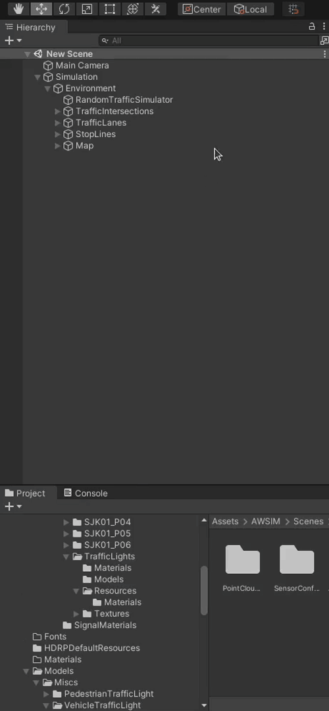
-
Click
Add Componentbutton, search forLightand select it.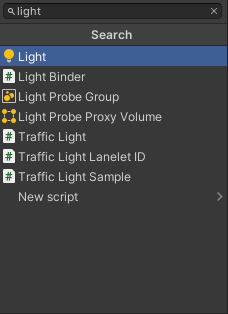
-
Change light Type to
Directional. -
Now you can configure the directional light as you wish. E.g. change the intensity or orientation.
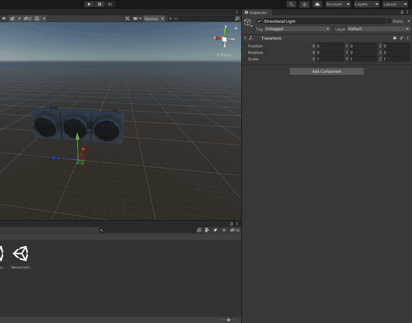
Tip
For more details on lighting check out official Unity documentation.
Example Environment after adding Directional Light
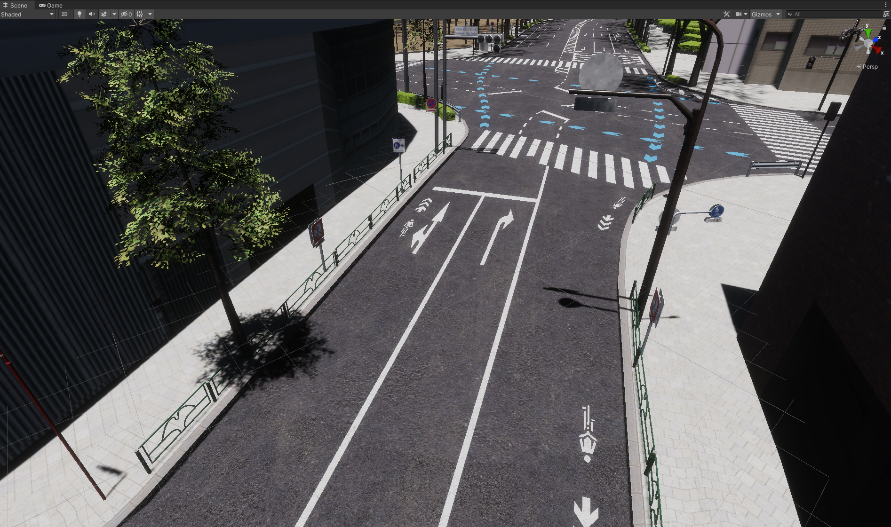
4. Add a Volume
-
Create a new child object of the Environment and name it
Volume.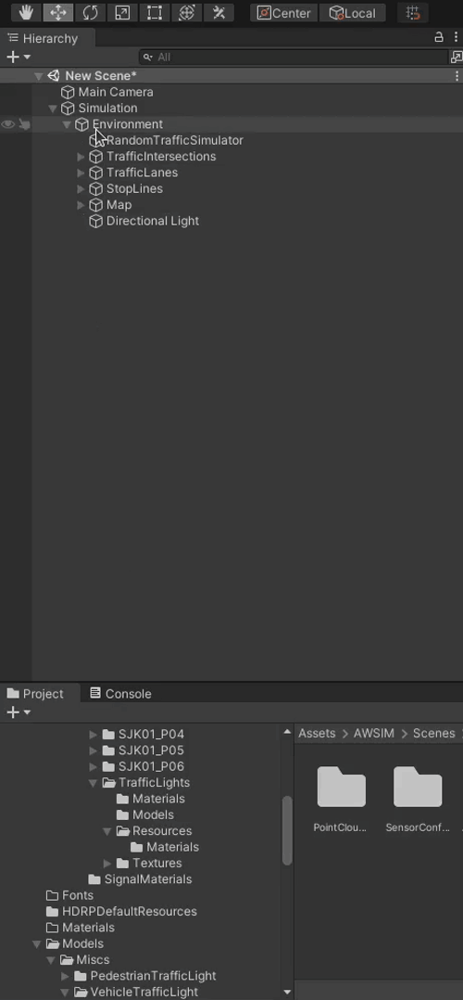
-
Click
Add Componentsearch forVolumeand select it.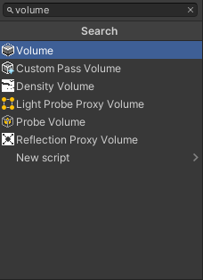
-
Change the Profile to
Volume Profileand wait for changes to take effect.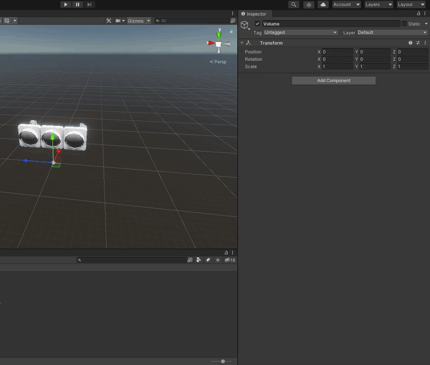
-
Now you can configure the Volume individually as you wish.
Tip
For more details on volumes checkout official Unity documentation.
Example Environment after adding Volume
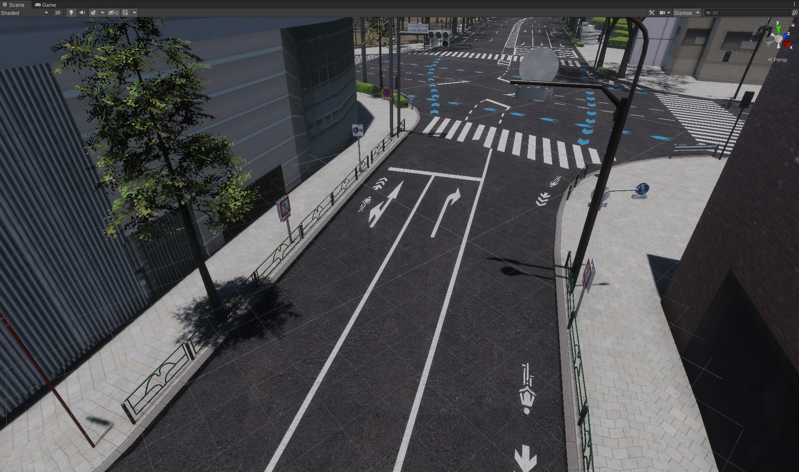
5. Add NPCPedestrians
-
Make
NPCPedestriansparent object.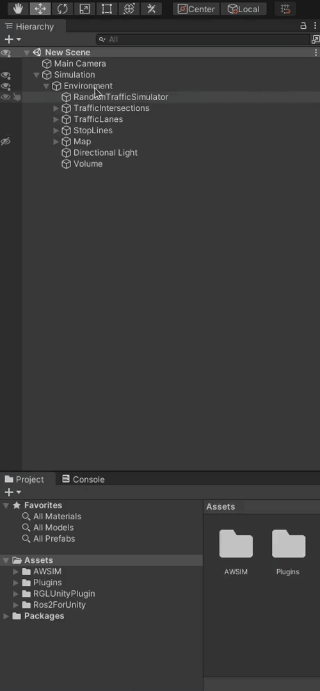
-
Open
Assets/AWSIM/Prefabs/NPCs/Pedestriansin Project view and drag ahumanElegantinto theNPCPedestriansparent object.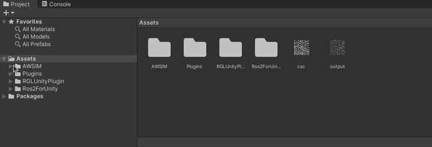
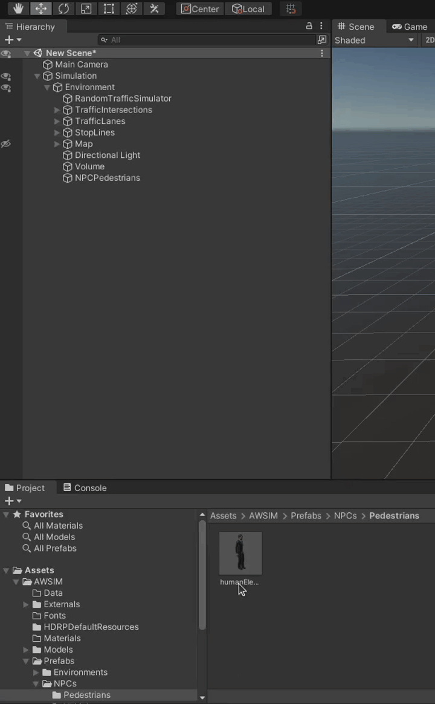
-
Click
Add Componentin the humanElegant object and search forSimple Pedestrian Walker ControllerScript and select it.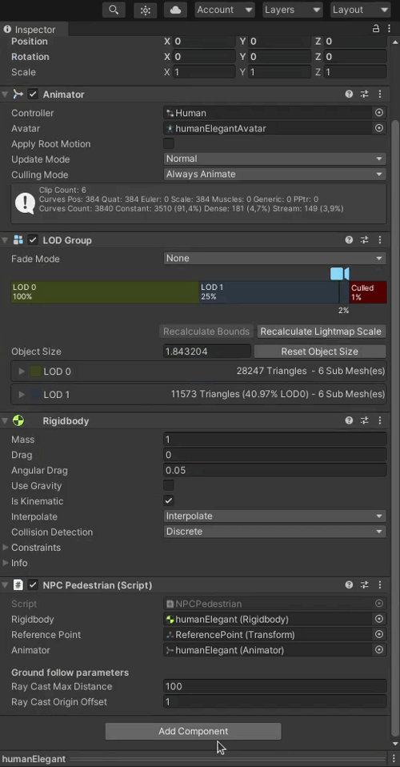
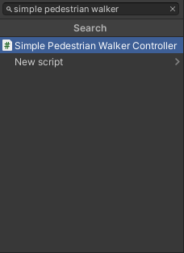
This is a simple Script that makes the pedestrian walk straight and turn around indefinitely. You can configure pedestrian behavior with 2 parameters.
- Duration - how long will the pedestrian walk straight
- Speed - how fast will the pedestrian walk straight
Tip
The
Simple Pedestrian Walker ControllerScript is best suited to be used on pavements. -
Finally position the
NPCPedestrianon the scene where you want it to start walking.Warning
Remember to set correct orientation, as the
NPCPedestrianwill walk straight from the starting position with the starting orientation.
Example Environment after adding NPC Pedestrians
6. Save an Environment prefab
After doing all the previous steps and having your Environment finished you can save it to prefab format.
- Find an Environments directory in the Project view (
Assets/AWSIM/Prefabs/Environments). - Drag the
EnvironmentObject into the Project view. - (optional) Change the prefab name to recognize it easily later.
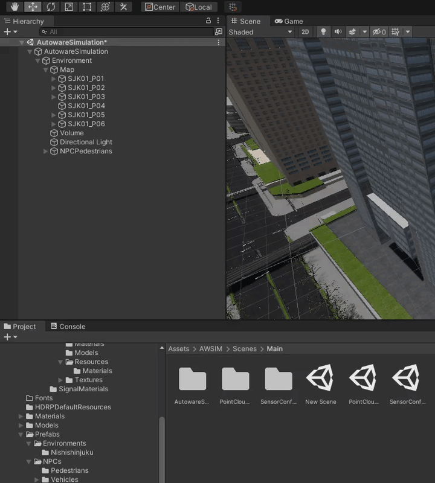
Success
Once you've added the Environment, you need to add and configure TrafficLights.
For details please visit this tutorial.